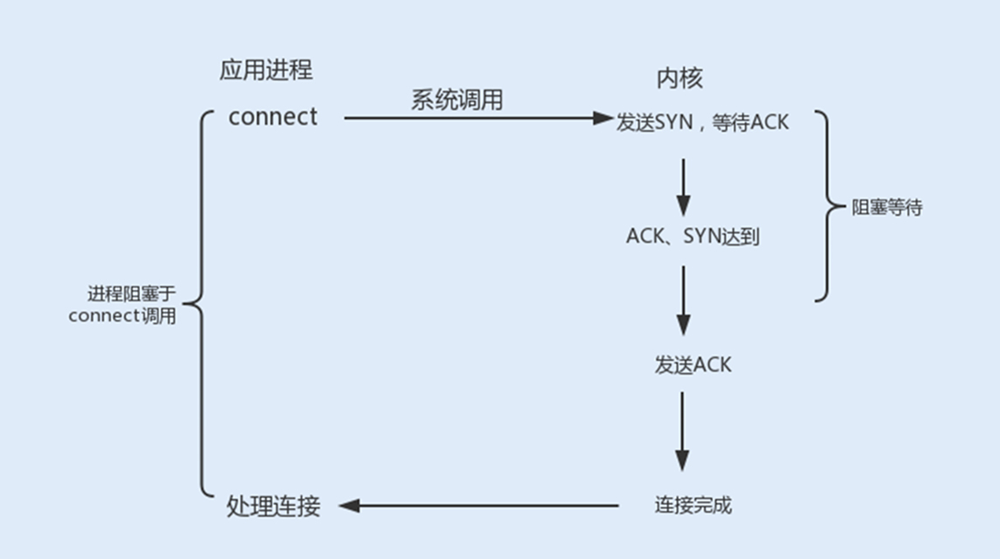
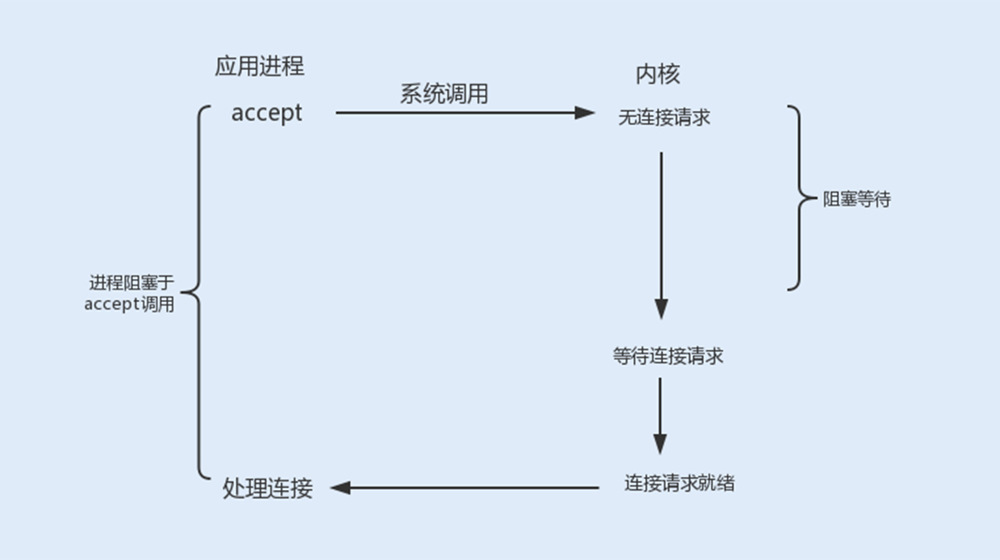
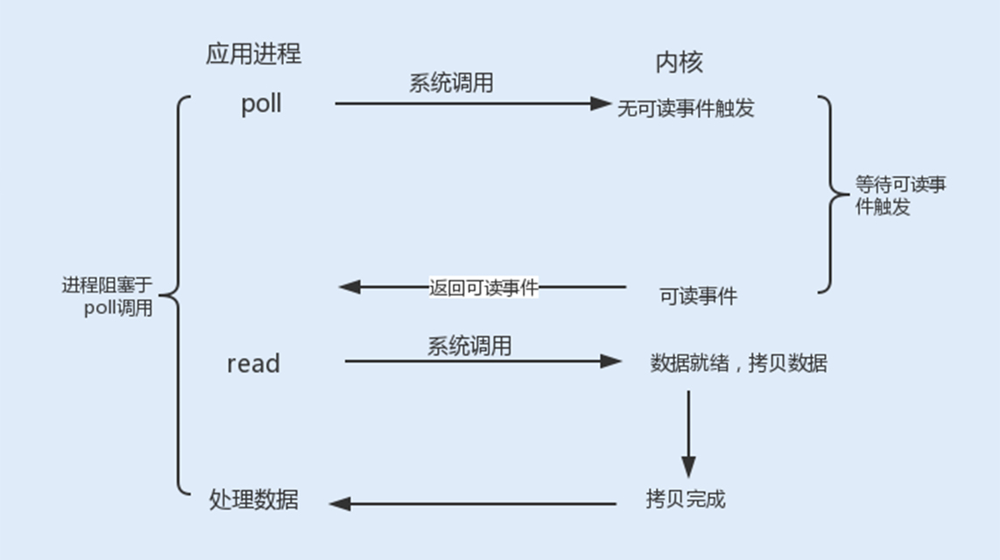

11 答疑课堂：深入了解 NIO 的优化实现原理¶
你好，我是刘超。专栏上线已经有 20 多天的时间了，首先要感谢各位同学的积极留言，交流的过程使我也收获良好。
综合查看完近期的留言以后，我的第一篇答疑课堂就顺势诞生了。我将继续讲解 I/O 优化，对大家在 08 讲中提到的内容做重点补充，并延伸一些有关 I/O 的知识点，更多结合实际场景进行分享。话不多说，我们马上切入正题。
Tomcat 中经常被提到的一个调优就是修改线程的 I/O 模型。Tomcat 8.5 版本之前，默认情况下使用的是 BIO 线程模型，如果在高负载、高并发的场景下，可以通过设置 NIO 线程模型，来提高系统的网络通信性能。
我们可以通过一个性能对比测试来看看在高负载或高并发的情况下，BIO 和 NIO 通信性能（这里用页面请求模拟多 I/O 读写操作的请求）：

{kind=link}
测试结果：Tomcat 在 I/O 读写操作比较多的情况下，使用 NIO 线程模型有明显的优势。 Tomcat 中看似一个简单的配置，其中却包含了大量的优化升级知识点。下面我们就从底层的网络 I/O 模型优化出发，再到内存拷贝优化和线程模型优化，深入分析下 Tomcat、Netty 等通信框架是如何通过优化 I/O 来提高系统性能的。
网络 I/O 模型优化¶
网络通信中，最底层的就是内核中的网络 I/O 模型了。随着技术的发展，操作系统内核的网络模型衍生出了五种 I/O 模型，《UNIX 网络编程》一书将这五种 I/O 模型分为阻塞式 I/O、非阻塞式 I/O、I/O 复用、信号驱动式 I/O 和异步 I/O。每一种 I/O 模型的出现，都是基于前一种 I/O 模型的优化升级。
最开始的阻塞式 I/O，它在每一个连接创建时，都需要一个用户线程来处理，并且在 I/O 操作没有就绪或结束时，线程会被挂起，进入阻塞等待状态，阻塞式 I/O 就成为了导致性能瓶颈的根本原因。那阻塞到底发生在套接字（socket）通信的哪些环节呢？
在《Unix 网络编程》中，套接字通信可以分为流式套接字（TCP）和数据报套接字（UDP）。其中 TCP 连接是我们最常用的，一起来了解下 TCP 服务端的工作流程（由于 TCP 的数据传输比较复杂，存在拆包和装包的可能，这里我只假设一次最简单的 TCP 数据传输）：
{kind=link}
- 首先，应用程序通过系统调用 socket 创建一个套接字，它是系统分配给应用程序的一个文件描述符；
- 其次，应用程序会通过系统调用 bind，绑定地址和端口号，给套接字命名一个名称；
- 然后，系统会调用 listen 创建一个队列用于存放客户端进来的连接；
- 最后，应用服务会通过系统调用 accept 来监听客户端的连接请求。
当有一个客户端连接到服务端之后，服务端就会调用 fork 创建一个子进程，通过系统调用 read 监听客户端发来的消息，再通过 write 向客户端返回信息。
1. 阻塞式 I/O¶
在整个 socket 通信工作流程中，socket 的默认状态是阻塞的。也就是说，当发出一个不能立即完成的套接字调用时，其进程将被阻塞，被系统挂起，进入睡眠状态，一直等待相应的操作响应。从上图中，我们可以发现，可能存在的阻塞主要包括以下三种。
connect 阻塞 ：当客户端发起 TCP 连接请求，通过系统调用 connect 函数，TCP 连接的建立需要完成三次握手过程，客户端需要等待服务端发送回来的 ACK 以及 SYN 信号，同样服务端也需要阻塞等待客户端确认连接的 ACK 信号，这就意味着 TCP 的每个 connect 都会阻塞等待，直到确认连接。
 accept 阻塞 ：一个阻塞的 socket 通信的服务端接收外来连接，会调用 accept 函数，如果没有新的连接到达，调用进程将被挂起，进入阻塞状态。
{kind=link}
 read、write 阻塞 ：当一个 socket 连接创建成功之后，服务端用 fork 函数创建一个子进程， 调用 read 函数等待客户端的数据写入，如果没有数据写入，调用子进程将被挂起，进入阻塞状态。
{kind=link}
{kind=link}
2. 非阻塞式 I/O¶
使用 fcntl 可以把以上三种操作都设置为非阻塞操作。如果没有数据返回，就会直接返回一个 EWOULDBLOCK 或 EAGAIN 错误，此时进程就不会一直被阻塞。
当我们把以上操作设置为了非阻塞状态，我们需要设置一个线程对该操作进行轮询检查，这也是最传统的非阻塞 I/O 模型。
{kind=link}
3. I/O 复用¶
如果使用用户线程轮询查看一个 I/O 操作的状态，在大量请求的情况下，这对于 CPU 的使用率无疑是种灾难。 那么除了这种方式，还有其它方式可以实现非阻塞 I/O 套接字吗？
Linux 提供了 I/O 复用函数 select/poll/epoll，进程将一个或多个读操作通过系统调用函数，阻塞在函数操作上。这样，系统内核就可以帮我们侦测多个读操作是否处于就绪状态。select() 函数 ：它的用途是，在超时时间内，监听用户感兴趣的文件描述符上的可读可写和异常事件的发生。Linux 操作系统的内核将所有外部设备都看做一个文件来操作，对一个文件的读写操作会调用内核提供的系统命令，返回一个文件描述符（fd）。
int select(int maxfdp1,fd_set *readset,fd_set *writeset,fd_set *exceptset,const struct timeval *timeout)
查看以上代码，select() 函数监视的文件描述符分 3 类，分别是 writefds（写文件描述符）、readfds（读文件描述符）以及 exceptfds（异常事件文件描述符）。
调用后 select() 函数会阻塞，直到有描述符就绪或者超时，函数返回。当 select 函数返回后，可以通过函数 FD_ISSET 遍历 fdset，来找到就绪的描述符。fd_set 可以理解为一个集合，这个集合中存放的是文件描述符，可通过以下四个宏进行设置：
void FD_ZERO(fd_set *fdset); // 清空集合
void FD_SET(int fd, fd_set *fdset); // 将一个给定的文件描述符加入集合之中
void FD_CLR(int fd, fd_set *fdset); // 将一个给定的文件描述符从集合中删除
int FD_ISSET(int fd, fd_set *fdset); // 检查集合中指定的文件描述符是否可以读写
{kind=link}
poll() 函数 ：在每次调用 select() 函数之前，系统需要把一个 fd 从用户态拷贝到内核态，这样就给系统带来了一定的性能开销。再有单个进程监视的 fd 数量默认是 1024，我们可以通过修改宏定义甚至重新编译内核的方式打破这一限制。但由于 fd_set 是基于数组实现的，在新增和删除 fd 时，数量过大会导致效率降低。
poll() 的机制与 select() 类似，二者在本质上差别不大。poll() 管理多个描述符也是通过轮询，根据描述符的状态进行处理，但 poll() 没有最大文件描述符数量的限制。
poll() 和 select() 存在一个相同的缺点，那就是包含大量文件描述符的数组被整体复制到用户态和内核的地址空间之间，而无论这些文件描述符是否就绪，他们的开销都会随着文件描述符数量的增加而线性增大。
 epoll() 函数 ：select/poll 是顺序扫描 fd 是否就绪，而且支持的 fd 数量不宜过大，因此它的使用受到了一些制约。
{kind=link}
Linux 在 2.6 内核版本中提供了一个 epoll 调用，epoll 使用事件驱动的方式代替轮询扫描 fd。epoll 事先通过 epoll_ctl() 来注册一个文件描述符，将文件描述符存放到内核的一个事件表中，这个事件表是基于红黑树实现的，所以在大量 I/O 请求的场景下，插入和删除的性能比 select/poll 的数组 fd_set 要好，因此 epoll 的性能更胜一筹，而且不会受到 fd 数量的限制。
通过以上代码，我们可以看到： epoll_ctl() 函数中的 epfd 是由 epoll_create() 函数生成的一个 epoll 专用文件描述符。op 代表操作事件类型，fd 表示关联文件描述符，event 表示指定监听的事件类型。
一旦某个文件描述符就绪时，内核会采用类似 callback 的回调机制，迅速激活这个文件描述符，当进程调用 epoll_wait() 时便得到通知，之后进程将完成相关 I/O 操作。
{kind=link}
4. 信号驱动式 I/O¶
信号驱动式 I/O 类似观察者模式，内核就是一个观察者，信号回调则是通知。用户进程发起一个 I/O 请求操作，会通过系统调用 sigaction 函数，给对应的套接字注册一个信号回调，此时不阻塞用户进程，进程会继续工作。当内核数据就绪时，内核就为该进程生成一个 SIGIO 信号，通过信号回调通知进程进行相关 I/O 操作。
{kind=link}
信号驱动式 I/O 相比于前三种 I/O 模式，实现了在等待数据就绪时，进程不被阻塞，主循环可以继续工作，所以性能更佳。
而由于 TCP 来说，信号驱动式 I/O 几乎没有被使用，这是因为 SIGIO 信号是一种 Unix 信号，信号没有附加信息，如果一个信号源有多种产生信号的原因，信号接收者就无法确定究竟发生了什么。而 TCP socket 生产的信号事件有七种之多，这样应用程序收到 SIGIO，根本无从区分处理。
但信号驱动式 I/O 现在被用在了 UDP 通信上，我们从 10 讲中的 UDP 通信流程图中可以发现，UDP 只有一个数据请求事件，这也就意味着在正常情况下 UDP 进程只要捕获 SIGIO 信号，就调用 recvfrom 读取到达的数据报。如果出现异常，就返回一个异常错误。比如，NTP 服务器就应用了这种模型。
5. 异步 I/O¶
信号驱动式 I/O 虽然在等待数据就绪时，没有阻塞进程，但在被通知后进行的 I/O 操作还是阻塞的，进程会等待数据从内核空间复制到用户空间中。而异步 I/O 则是实现了真正的非阻塞 I/O。
当用户进程发起一个 I/O 请求操作，系统会告知内核启动某个操作，并让内核在整个操作完成后通知进程。这个操作包括等待数据就绪和数据从内核复制到用户空间。由于程序的代码复杂度高，调试难度大，且支持异步 I/O 的操作系统比较少见（目前 Linux 暂不支持，而 Windows 已经实现了异步 I/O），所以在实际生产环境中很少用到异步 I/O 模型。
{kind=link}
在 08 讲中，我讲到了 NIO 使用 I/O 复用器 Selector 实现非阻塞 I/O，Selector 就是使用了这五种类型中的 I/O 复用模型。Java 中的 Selector 其实就是 select/poll/epoll 的外包类。
我们在上面的 TCP 通信流程中讲到，Socket 通信中的 conect、accept、read 以及 write 为阻塞操作，在 Selector 中分别对应 SelectionKey 的四个监听事件 OP_ACCEPT、OP_CONNECT、OP_READ 以及 OP_WRITE。
{kind=link}
在 NIO 服务端通信编程中，首先会创建一个 Channel，用于监听客户端连接；接着，创建多路复用器 Selector，并将 Channel 注册到 Selector，程序会通过 Selector 来轮询注册在其上的 Channel，当发现一个或多个 Channel 处于就绪状态时，返回就绪的监听事件，最后程序匹配到监听事件，进行相关的 I/O 操作。
{kind=link}
在创建 Selector 时，程序会根据操作系统版本选择使用哪种 I/O 复用函数。在 JDK1.5 版本中，如果程序运行在 Linux 操作系统，且内核版本在 2.6 以上，NIO 中会选择 epoll 来替代传统的 select/poll，这也极大地提升了 NIO 通信的性能。
由于信号驱动式 I/O 对 TCP 通信的不支持，以及异步 I/O 在 Linux 操作系统内核中的应用还不大成熟，大部分框架都还是基于 I/O 复用模型实现的网络通信。
零拷贝¶
在 I/O 复用模型中，执行读写 I/O 操作依然是阻塞的，在执行读写 I/O 操作时，存在着多次内存拷贝和上下文切换，给系统增加了性能开销。
零拷贝是一种避免多次内存复制的技术，用来优化读写 I/O 操作。
在网络编程中，通常由 read、write 来完成一次 I/O 读写操作。每一次 I/O 读写操作都需要完成四次内存拷贝，路径是 I/O 设备 -> 内核空间 -> 用户空间 -> 内核空间 -> 其它 I/O 设备。
Linux 内核中的 mmap 函数可以代替 read、write 的 I/O 读写操作，实现用户空间和内核空间共享一个缓存数据。mmap 将用户空间的一块地址和内核空间的一块地址同时映射到相同的一块物理内存地址，不管是用户空间还是内核空间都是虚拟地址，最终要通过地址映射映射到物理内存地址。这种方式避免了内核空间与用户空间的数据交换。I/O 复用中的 epoll 函数中就是使用了 mmap 减少了内存拷贝。
在 Java 的 NIO 编程中，则是使用到了 Direct Buffer 来实现内存的零拷贝。Java 直接在 JVM 内存空间之外开辟了一个物理内存空间，这样内核和用户进程都能共享一份缓存数据。这是在 08 讲中已经详细讲解过的内容，你可以再去回顾下。
线程模型优化¶
除了内核对网络 I/O 模型的优化，NIO 在用户层也做了优化升级。NIO 是基于事件驱动模型来实现的 I/O 操作。Reactor 模型是同步 I/O 事件处理的一种常见模型，其核心思想是将 I/O 事件注册到多路复用器上，一旦有 I/O 事件触发，多路复用器就会将事件分发到事件处理器中，执行就绪的 I/O 事件操作。该模型有以下三个主要组件：
- 事件接收器 Acceptor：主要负责接收请求连接；
- 事件分离器 Reactor：接收请求后，会将建立的连接注册到分离器中，依赖于循环监听多路复用器 Selector，一旦监听到事件，就会将事件 dispatch 到事件处理器；
- 事件处理器 Handlers：事件处理器主要是完成相关的事件处理，比如读写 I/O 操作。
1. 单线程 Reactor 线程模型¶
最开始 NIO 是基于单线程实现的，所有的 I/O 操作都是在一个 NIO 线程上完成。由于 NIO 是非阻塞 I/O，理论上一个线程可以完成所有的 I/O 操作。
但 NIO 其实还不算真正地实现了非阻塞 I/O 操作，因为读写 I/O 操作时用户进程还是处于阻塞状态，这种方式在高负载、高并发的场景下会存在性能瓶颈，一个 NIO 线程如果同时处理上万连接的 I/O 操作，系统是无法支撑这种量级的请求的。
{kind=link}
2. 多线程 Reactor 线程模型¶
为了解决这种单线程的 NIO 在高负载、高并发场景下的性能瓶颈，后来使用了线程池。
在 Tomcat 和 Netty 中都使用了一个 Acceptor 线程来监听连接请求事件，当连接成功之后，会将建立的连接注册到多路复用器中，一旦监听到事件，将交给 Worker 线程池来负责处理。大多数情况下，这种线程模型可以满足性能要求，但如果连接的客户端再上一个量级，一个 Acceptor 线程可能会存在性能瓶颈。
{kind=link}
3. 主从 Reactor 线程模型¶
现在主流通信框架中的 NIO 通信框架都是基于主从 Reactor 线程模型来实现的。在这个模型中，Acceptor 不再是一个单独的 NIO 线程，而是一个线程池。Acceptor 接收到客户端的 TCP 连接请求，建立连接之后，后续的 I/O 操作将交给 Worker I/O 线程。
{kind=link}
基于线程模型的 Tomcat 参数调优¶
Tomcat 中，BIO、NIO 是基于主从 Reactor 线程模型实现的。
在 BIO 中， Tomcat 中的 Acceptor 只负责监听新的连接，一旦连接建立监听到 I/O 操作，将会交给 Worker 线程中，Worker 线程专门负责 I/O 读写操作。
在 NIO 中， Tomcat 新增了一个 Poller 线程池，Acceptor 监听到连接后，不是直接使用 Worker 中的线程处理请求，而是先将请求发送给了 Poller 缓冲队列。在 Poller 中，维护了一个 Selector 对象，当 Poller 从队列中取出连接后，注册到该 Selector 中；然后通过遍历 Selector，找出其中就绪的 I/O 操作，并使用 Worker 中的线程处理相应的请求。
{kind=link}
你可以通过以下几个参数来设置 Acceptor 线程池和 Worker 线程池的配置项。
acceptorThreadCount： 该参数代表 Acceptor 的线程数量，在请求客户端的数据量非常巨大的情况下，可以适当地调大该线程数量来提高处理请求连接的能力，默认值为 1。
maxThreads： 专门处理 I/O 操作的 Worker 线程数量，默认是 200，可以根据实际的环境来调整该参数，但不一定越大越好。
acceptCount： Tomcat 的 Acceptor 线程是负责从 accept 队列中取出该 connection，然后交给工作线程去执行相关操作，这里的 acceptCount 指的是 accept 队列的大小。
当 Http 关闭 keep alive，在并发量比较大时，可以适当地调大这个值。而在 Http 开启 keep alive 时，因为 Worker 线程数量有限，Worker 线程就可能因长时间被占用，而连接在 accept 队列中等待超时。如果 accept 队列过大，就容易浪费连接。
maxConnections： 表示有多少个 socket 连接到 Tomcat 上。在 BIO 模式中，一个线程只能处理一个连接，一般 maxConnections 与 maxThreads 的值大小相同；在 NIO 模式中，一个线程同时处理多个连接，maxConnections 应该设置得比 maxThreads 要大的多，默认是 10000。